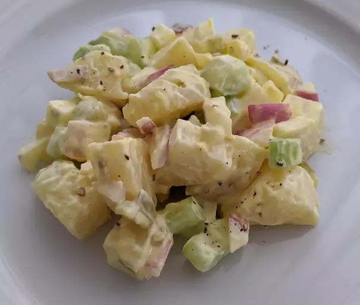

All-American Loaded Baked Potato Salad Recipe
Description
A salad that has eggs and potatos? A little different than typical salads. Is it delcious though?
For most people, the answer to that question is an empatic YES.
In this recipe, you will learn how to make potato salad mixed with a little more umph
than your traditional potato salad.
Perfect for a homecooked meal, perfect for a side dish to bring to holiday dinners, perfect for eating.
Ingredients
- 6 cups cubed russet potatoes
- 1 teaspoon salt
- 1 cup sour cream
- 1 cup creamy salad dressing (such as Miracle Whip®)
- ½ teaspoon coarse ground black pepper
- 1 cup shredded Cheddar cheese
- ½ cup chopped green onions
- ½ cup real bacon bits
Steps
- Place potatoes in a pot; fill with water until potatoes are covered.
Add salt; bring to boil. Simmer until potatoes are just tender enough to be pierced with a fork, about 15 minutes.
Drain and run under cold water until potatoes are slightly cool.
- Mix sour cream, creamy salad dressing, and ground black pepper together in a large bowl.
Stir in Cheddar cheese, green onion,
and bacon bits; add potatoes. Cover and chill in the refrigerator until ready to serve.